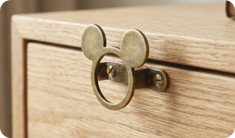
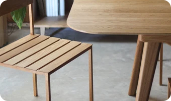
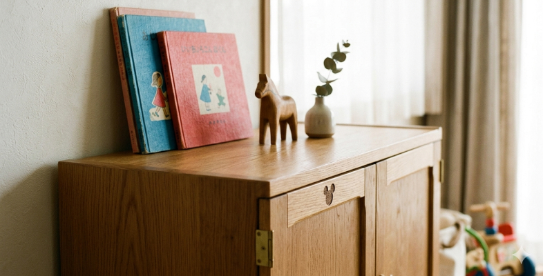

さりげなさに、愛を込めて。
毎日触れるものだから。アンティーク調の真鍮で作られたミッキーシェイプの取っ手は、使うたびに心が少し温まる、大人だけの遊び心です。
きょうだいで育む、
北欧ヴィンテージの品格。

毎日触れるものだから。アンティーク調の真鍮で作られたミッキーシェイプの取っ手は、使うたびに心が少し温まる、大人だけの遊び心です。

お掃除ロボットもスイスイ通れる実用性と、空間を広く見せる美しさを両立しました。

散らかりがちな絵本やおもちゃも、この棚があるだけで、まるでインテリアの一部に。時が経つほどに味わいが増す天然木の質感は、お子様の成長とともに、家族の歴史を静かに見守り続けます。
送料無料 / 大型家具設置サービス対象商品
＊世界観と権利関係を尊重した、プロとしてのファンアート（架空提案）です。